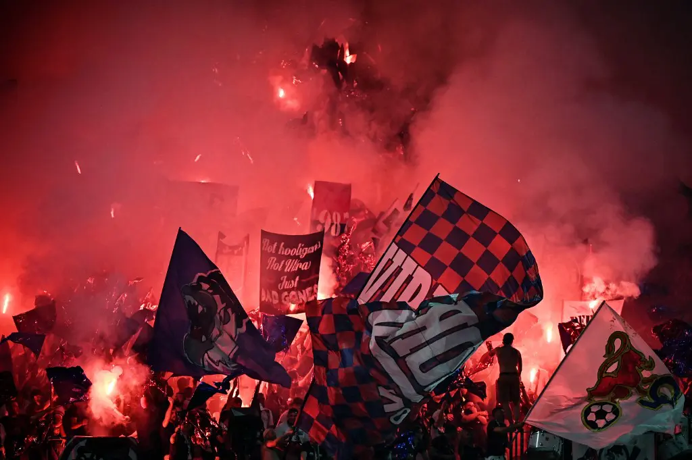
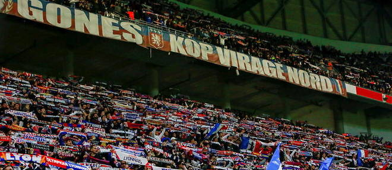

Bad gones 1987- Virage Nord
L'histoire des bad Gones
A l'origine du groupe se trouve le Kop Jean Bouin. Celui-ci regroupe les fans les plus turbulents de l'OL, au sein de la tribune Jean Bouin, alors que le club évolue en seconde division. Certains stades champêtres se souviennent encore certainement de ces visiteurs agités qui accompagnaient alors l'Olympique Lyonnais. Peu après la montée en D1 en 1989, le groupe abandonne la tribune Jean Bouin et ses bancs qui parfois volaient, pour le Virage Nord et ses grands espaces. Le groupe est très hétérogène, d'un côté les «voyageurs» peu intéressés par les tifos, de l'autre des jeunes voulant s'inspirer du modèle italien. Mais ce n'est pas vraiment par les spectacles que le groupe s'illustre dans ces années là. Véritable territoire, le Virage Nord est un lieu de liberté très âprement défendu par ses occupants. On garde en mémoire quelques affrontements très violents avec les forces de l'ordre, lesquels furent parfois purement et simplement refoulés hors du virage.Un célèbre Lyon-Caen en 1991 dégénérera en émeute au sein du virage puis se propagera dans les rues aux alentours. Résultat : hospitalisation pour une petite dizaine de CRS ! Cet événement sera célébré par la création d'une bâche « Section 24/08 », en référence à la date des affrontements. Les bagarres sont systématiques avec les rares supporters adverses qui viennent nous rendre visite. Les Marseillais en gardent certainement de bons souvenirs, meilleurs en tout cas que les Stéphanois qui jouent alors le rôle de souffre-douleur de service. Les services de police surveillent alors les agissements de ce que l'on nomme vite « les hooligans lyonnais ». Ils attendent la goutte d'eau qui fera déborder le vase. Celle-ci viendra de quelques jeunes, gravitant autour du groupe, lesquels déclencheront en septembre 1992, par un acte antisémite lamentable, une vague de répression musclée. Les inspecteurs en civil remplacent les CRS, la pression se fait plus forte et surtout, la réputation du Virage Nord prend un sacré coup : Gerland devient tout de suite beaucoup moins attractif. Beaucoup de parents interdisent à leurs enfants d'assister aux matchs et le groupe voit ses forces vives diminuer. Reste une centaine d'irréductibles.
Il faut attendre octobre 1995 pour qu'un nouvel événement important de la vie du groupe voit le jour. Cette fois, l'OL se déplace à la Lazio en Coupe de l'UEFA. 80 BG investissent les rues de Rome lors d'un déplacement qui restera dans les mémoires du groupe. Passé du côté du Virage Sud le temps des travaux visant à remplacer notre Virage par une tribune flambante neuve pour accueillir la Coupe du Monde, le groupe n'est pas loin de la fin. En marge des rescapés Bad Gones, un kop très rajeuni subsiste malgré les pressions policières constantes. Un noyau s'organise pour faire revivre le groupe, sans grandes ambitions. Il héritera, presque malgré lui, des prérogatives des animateurs de tribune à partir de 1997, date de retour du groupe au sein de son nouveau Virage Nord. Les débuts sont peu enthousiasmants ; notre virage ayant vu, à quelque chose près, sa population entièrement renouvelée. Les jeunes ne manifestent pas de réelle volonté à s'impliquer et le noyau dur ne s'intéresse guère à l'aspect tifo. Pourtant, en reposant la bâche BG, les responsables du groupe désirent intégrer toutes les composantes BG (les Ultras, les hools, les anciens, les touristes). Finalement, quelques belles réalisations viennent récompenser le travail accompli. Lors de la saison 1998-1999, les Bad Gones se mobilisent pour d'inoubliables déplacements européens, notamment à Bruges et à Bologne. En 1999-2000, le groupe compte 1 500 membres : ceci implique le besoin d'une nouvelle organisation et d'une rationalisation des activités. Cette évolution s'accompagne d'une difficile période de transition . Les anciens responsables ont déjà trop donné et la nouvelle génération peine à s'imposer : le groupe stagne. Les critiques quant à l'évolution du groupe ne facilitent pas les choses. Les Bad Gones peinent à se motiver pour les déplacements et l'ambiance à Gerland est souvent très décevante. Les résultats n'arrangent en rien la situation. Le ton monte avec le club comme lors de la saison 1999-2000 et les deux consternantes éliminations contre Maribor puis contre le Werder de Brême. En 2001, nombreux seront ceux qui préfèrent quitter définitivement le groupe, lequel fonctionne alors avec un effectif minimum. Alors une nouvelle fois, les Bad Gones ne passent pas loin de la fin. La persévérance de certains paye enfin et les Bad Gones voient émerger une nouvelle génération capable de relancer le groupe. De nombreux jeunes s'investissent en faisant preuve de beaucoup d'envie et d'une mentalité authentique. Le groupe repart sur des bases neuves en comptant désormais sur une expérience durement acquise, du sang neuf et une solide unité. Le stade de l'adolescence passé, le groupe est conscient qu'il évolue dans un milieu de moins en moins enclin à tolérer l'enthousiasme qui anime les groupes de supporters. Le contexte exige une bonne dose de maturité, de solidarité et surtout beaucoup de ténacité.
La saison 2001-2002 est marquée par une grosse évolution, puisque l'ensemble des fans du Virage Nord est rassemblé sous la bâche KOP VIRAGE NORD. L'ampleur prise par le groupe encourage cette évolution. Le terme « Bad Gones » continue à désigner les plus actifs, les plus motivés et les plus fidèles membres du groupe. De bien belles réalisations au Virage Nord et des déplacements prometteurs accompagnent l'obtention, au bout du suspense, du premier titre de champion de France. Si certains déplacements restent largement délaissés, d'autres mobilisent énormément, surtout en fin de saison : Auxerre, Strasbourg et Bordeaux notamment. L'ambiance à Gerland ne cesse de s'améliorer. Les résultats sportifs et l'arrivée de cette nouvelle génération insufflent incontestablement un nouvel élan au groupe. Après de nombreuses saisons galères, le groupe attaque la saison 2002-2003 de manière beaucoup plus optimiste. Le 1er décembre, le groupe célèbre à Gerland ses 15 ans d'existence, à l'occasion de la réception de Strasbourg. Le tour de terrain qu'ont entrepris une trentaine de BG parmi les plus représentatifs et ce, avec une bâche historique, est conclut par l'allumage de plus de 50 torches puis par un magnifique tifo à base de voiles. C'est aussi et surtout l'occasion de terribles soirées de commémorations, arrosées comme il se doit. Par ailleurs, la politique commerciale et le discours ultra-libéral de Jean-Michel Aulas continuent à porter ses fruits sur les résultats sportifs et économiques du club. Bien que conscient de sa réussite et reconnaissant pour le travail qu'a accompli le président de l'OL, le Kop Virage Nord veille toutefois à communiquer sur le regard qu'il porte sur le football contemporain et ne compte pas perdre son sens critique. Dans la saison, plusieurs actions visent donc à affirmer une autre vision du football, plus populaire et moins mercantile. Le même esprit anime le groupe vis-à-vis des résultats sportifs du club. Quand les mauvais scores s'accumulent, comme en cette fin d'année 2002, le centre d'entraînement est visité par quelques dizaines de BG. Le groupe n'a pas perdu ses vieux réflexes. A ce titre, quelques déplacements offrent également de belles séquences de nostalgie aux plus anciens. Le second titre (2002-2003) est obtenu à Montpellier devant 5 000 Lyonnais enflammés. Quelques jours après, Sonny Anderson annonce son départ. Comme Florent Laville, Alain Cavéglia, et Grégory Coupet, il appartient à ces joueurs qui, à leur manière, se sont affirmés comme de vrais compagnons de route pour le groupe. Juninho prend alors la relève dans le coeur des Bad Gones.
Au milieu des années 2000, les tifos ambitieux se succèdent et le groupe chargé de l'animation s'en donne à coeur joie, grâce à une implication croissante et à un savoir-faire s'améliorant année après année. D'inoubliables déplacements accompagnent les épopées européennes avec en point d'orgue, les 10 000 lyonnais à Milan pour le quart de finale de la Ligue des Champions en 2006. Durant les années 2000, le groupe ne cesse de prendre de l'ampleur et peut s'appuyer sur un large noyau de motivés. A Gerland, la folie est contagieuse et l'ensemble du stade est régulièrement porté par l'enthousiasme du virage Nord. En 2007, les Bad Gones fêtent leurs 20 ans. Soirées, match entre BG en lever de rideau sur le terrain de Gerland, Sonny Anderson en tribune et animations diverses participent au plaisir de plusieurs générations de Bad Gones. L'évocation des souvenirs de chacun est l'occasion de mesurer le chemin parcouru, de Louhans-Cuiseaux à Madrid, de Brest à Munich. C'est l'occasion également de penser à ceux qui, trop nombreux, nous ont quittés. Aujourd'hui, de nouveaux gones motivés s'impliquent et offrent l'espoir d'un bel avenir. Il ne leur reste plus qu'à assumer leur statut de Bad Gones et donc de moteur du Kop Virage Nord. Depuis plus de 20 ans, le groupe a su faire face aux difficultés. Il a été obligé de s'adapter à un environnement changeant (club, police, médias). Il a aussi naturellement évolué au gré des résultats du club. Les Bad Gones et l'Olympique Lyonnais offrent en effet deux histoires intimement liées : JMA reprenant le club peu avant que les anciens créent les BG. Il n'est pas étonnant dès lors, que le groupe soit devenu un acteur à part entière du club. Un acteur légitime, souvent critique mais toujours fidèle. Si quelques-uns ont regretté certaines évolutions du groupe, d'autres s'en sont félicité. Il reste que jamais les Bad Gones ne se seront reniés, ils ont simplement évolués : après l'adolescence, la maturité. Aujourd'hui, la fidélité des gones de la première heure ne peut qu'encourager les nouvelles générations à s'impliquer dans un groupe historique et atypique. L'histoire continue